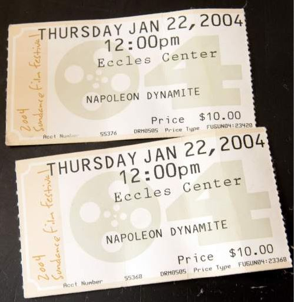

Preston
Weather Summary
Five Day Forecast
Residents look back on 'Napoleon Dynamite'
Twelve years ago, Preston was a town like any other, a relatively quiet part of southern Idaho with a population of just under 5,000 people. Known for That Famous Preston Night Rodeo and its close proximity to the site of the Bear River Massacre, most of the United States would likely have been unable to locate it on a map.
Things would change for the small Franklin County town with the release of "Napoleon Dynamite" in 2004. The quotable comedy film written and directed by Preston native Jared Hess became a surprise hit, earning $46.1 million at the box office on a budget of only $400,000. As the site of the film, Preston gained a foothold in pop culture, the Herald Journal reported.
"Some people worry that the movie gives us a bad name," Preston resident Rhonda Gregerson said. "But really, it gives us a great name. The movie put us right on the map; it's our golden goose."
"All over the world" • Overnight, fans from all over the world descended onto Preston to tour all the places where the movie had been filmed, from the houses of the main characters to the multicolored lockers at Preston High School. Even 12 years past the movie's wide theatrical release, Gregerson said, every summer at least 50 groups of fans walk into the office of The Preston Citizen, the local newspaper where she works as the circulation manager, wanting to know more about the film.
"They come from all over the place," Gregerson said. "In the beginning it was just from the state, but as the movie became more popular, they started coming from all over the world. Germany, England, New Zealand, Korea, Japan, China . they've all come in and have been serious fans."
Contact Us
Address:
Welly Weather Head Office
Stewart Duff Drive
Rongotai, Wellington
Phone:
+64 4-385 5100
Email:
info@wellyweather.co.nz